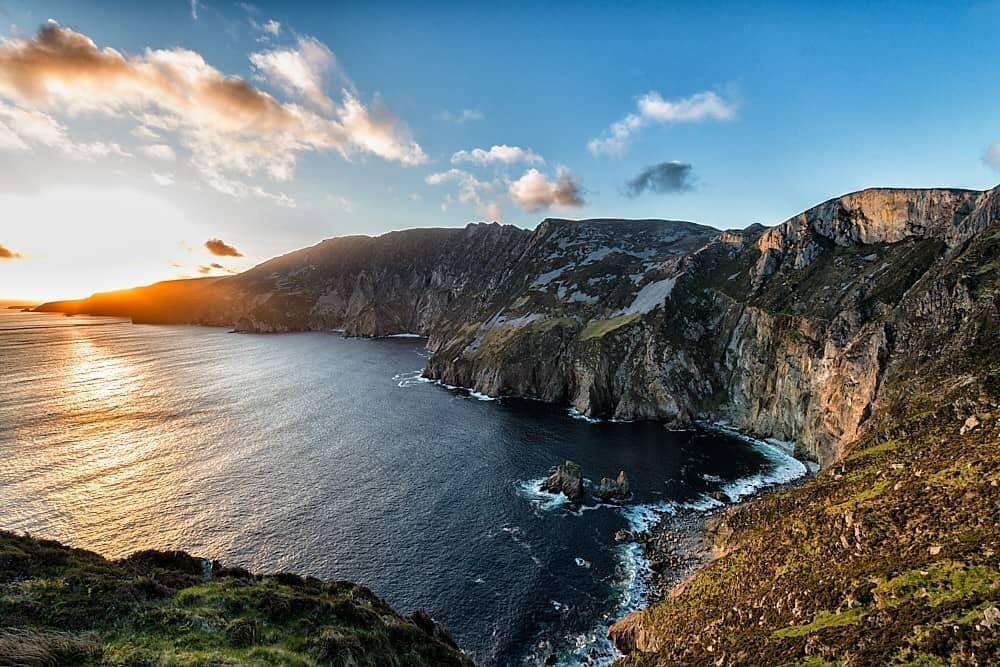
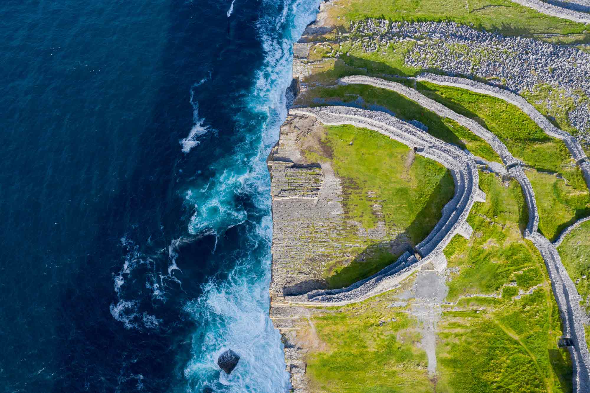
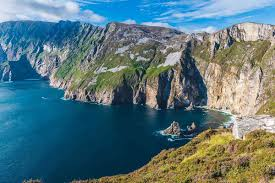
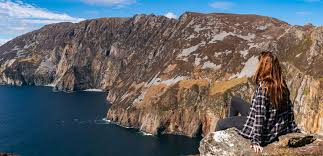
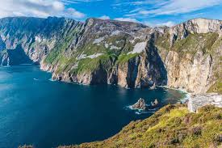
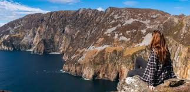

About the Cliffs of Ireland
The Cliffs of Ireland are a series of stunning, rugged sea cliffs along the western coast of Ireland. these cliffs are world-famous for their dramatic landscapes, diverse wildlife, and cultural significance. The most well-known of these are the Cliffs of Moher, but many others are worth noting.
Why Are the Cliffs Important?
- Natural Beauty: The cliffs are a defining feature of the Wild Atlantic Way, one of the world’s most scenic coastal drives.
- Wildlife: Many cliffs provide essential breeding and nesting sites for seabirds, as well as habitats for marine life.
- Cultural Significance: Sites like the Cliffs of Moher are steeped in Irish folklore and mythology.
- Tourism: They are among Ireland's most visited natural attractions, with millions of visitors annually.
What Makes Irish Cliffs Unique?
- Dramatic Height and Isolation: Unlike ordinary coastal cliffs, Ireland's cliffs are extremely tall and offer sweeping, uninterrupted views of the Atlantic.
- Mythology and Folklore: Many cliffs have legends attached, often involving fairies, giants, and saints.
- Diverse Wildlife: From seabird colonies to dolphin sightings, the cliffs are wildlife hotspots.
Cliffs of Moher, Co. Clare
The Cliffs of Moher are one of Ireland's most visited natural attractions. The Cliffs are located in County Clare on the west coast of Ireland. Towering 214 meters (702 feet) above the Atlantic Ocean at their highest point and stretching about 14 km along the Atlantic coast, these cliffs offer stunning views of the Aran Islands, Galway Bay, and the rolling hills of Connemara. The visitor center provides tourists with educational exhibits, cafes, and scenic viewpoints. the cliffs are an important bird sanctuary, hosting around 20 species of seabirds, including puffins, guillemots, razorbills, kittiwakes, and peregrine falcons. Dolphins, seals, and basking sharks can sometimes be spotted in the waters below the cliffs. The Cliffs of Moher attract over 1.5 million visitors each year making it one of Ireland's most popular tourist destinations. The Cliffs of Moher Visitor Experience includes interactive exhibits on geology, wildlife, and history, as well as a gift shop and cafe. A small stone observation tower bilt in 1835 by Sir Cornelius O'Brien serves as a popular viewpoint.

Slieve League Cliffs, Co. Donegal
The Slieve League Cliffs (sometimes spelled Sliabh Liag) are one of the most spectacular and highest sea cliffs in Ireland, offering breathtaking views of the Atlantic Ocean. While less famous than the Cliffs of Moher, Slieve League is often regarded as a more authentic and less crowded experience, here's a general overview of the Slieve League Cliffs. The cliffs reach a height of about 601 meters (1,972 feet) above sea level, making them nearly three times taller than the Cliffs of Moher. The cliffs are composed mainly of ancient sandstone and quartzite, formed over 600 million years ago. Their rugged appearance is the result of constant weathering by wind, rain, and sea erosion. visitors can enjoy sweeping views of Donegal Bay, the Wild Atlantic Way, and sometimes even the Sligo Mountains. The cliffs are less commercialised than the Cliffs of Moher, allowing for a more authentic and peaceful experience with fewer crowds. There are two main viewing areas- the lower car park and the upper viewing platform (accessible via a narrow, winding road). The main hiking route is called the "One Man's Pass", a narrow, challenging ridge walk that offers adrenaline- including views over the edge of the cliffs.
Dun Aengus, Inis Mór
Dun Aonghasa (Dun Aengus) is one of the most iconic and best-preserved prehistoric stone forts in Ireland. Located on Inis Mor, the largest of the Aran Islands in Country Galway, it is a significant archeological site and popular tourist destination. the fort is renowned for its dramatic location atop a sheer cliff edge overlooking the Atlantic Ocean. Dun Aonghasa dates back to the Bronze Age (c. 1100 BCE), with some evidence of later Iron Age Modifications. the site is a symbol of Irelan's prehistoric and Celtic heritage. The fort has a distinctive semi-circular shape, as the cliff edge forms its natural boundary on one side. it consists of three concentric stone walls made of dry stone construction, with the outermost wall enclosing an area of about 14 acres. the exact purpose of Dun Aengus is still debated by historians and archeologists who suggest it may have served multiple roles over the years, including: as a ceremonial or religious site, a defence fortification, and as a status symbol for power among local rulers. visitors can access Dun Aengus via a ferry from Doolin or by small plane from Connemara Airport to Inis Mor.

 


